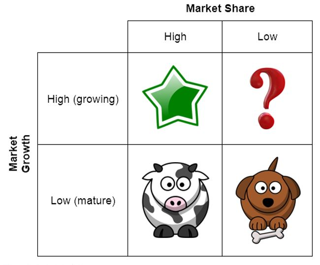
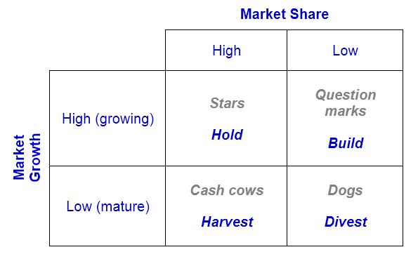
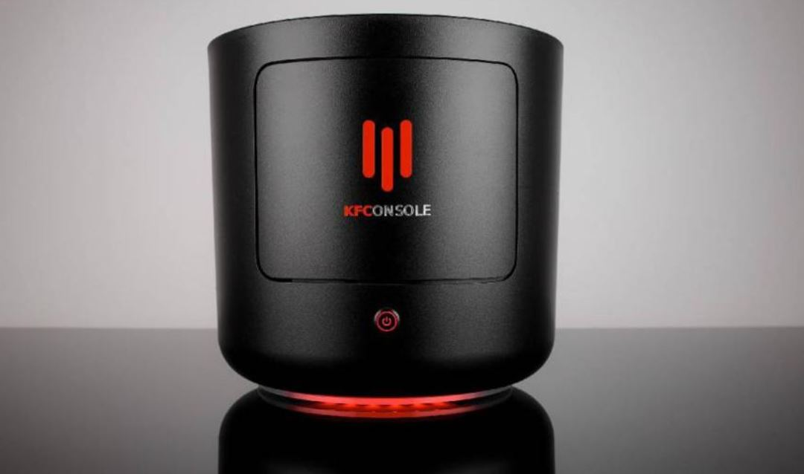

IB Docs (2) Team
IB Docs (2) Team

BMT 4 - Boston Consulting Group matrix

The Boston Consulting Group (BCG) matrix is a visual marketing management tool used to analyse a firm’s product portfolio. For example, Apple’s product portfolio (which gives it a range of revenue streams) include: the iPhone, iPad, iTunes, Apple Watch, MacBook laptops, Airpods, and computer accessories. Some products (such as the iPhone) earn Apple a huge amount of sales revenue, whereas other products in its portfolio (such as Airpods) earn less revenue for the company.
The term BCG Matrix is named after Boston Consulting Group, the management consultancy group that developed the marketing management tool.
Did you know?
LVMH (Louis Vuitton Moët Hennessy) is a large French multinational corporation and conglomerate that specializes in luxury goods. Its product portolio includes the like of Moët & Chandon (champagne), Perfumes Loewe (perfumes and cosmetics), TAG Heuer (luxury watches), Tiffany & Co. (jewellery), and Princess Yachts (luxury yachts). Its fashion and leather goods brands include Christian Dior, Fendi, Givenchy, Kenzo, Louis Vuitton, and Marc Jacobs.
PepsiCo’s product portfolio includes: Lay’s, Doritos, Quavers, Cheetos, Mountain Dew, Aquafina, 7-Up, Lipton, Tropicana, Gatorade, Taco Bell, KFC, and Pizza Hut.
Sony, Japan's global electronics giant, was founded in Tokyo in 1946 by Ibuka Masaru and Morita Akio. The company's first product was a rice cooker. Sony branched out into creating radios in the 1950s, and a broader product range of consumer electronics in the 1960s.
Proctor & Gamble’s billion-dollar products (those that earn P&G more than $1bn in sales a year) include: Crest (toothpaste), Duracell (batteries), Gillette (shaving products), Head & Shoulders (shampoo products), Oral-B (hygiene products), Pampers (diapers), Tide (cleaning products) and Pringles (potato chips).
The Volkswagen Group (Europe’s largest car manufacturer) owns Audi, Bentley, Bugatti, Ducati, Lamborghini, Porsche, ŠKODA, and SEAT. The VW Group also produces its own sausages(!) as it is cheaper to do so in its own factories than to buy these for their staff canteen.
Benefits of a balanced product portfolio
Having a broad product portfolio can a help business to increase its brand awareness.
It also reduces the risks and exposure associated with having just a single product, e.g. seasonal fluctuations in demand.
It increases the firm’s revenue streams as a variety of products will appeal to a wider customer base.
The BCG matrix is used to place a firm’s products according to its market share and the market growth. It is a useful marketing tool for managing a varied range of products. There are four product categories in the BCG matrix: (i) Question marks, (ii) Stars, (iii) Cash cows, and (iv) Dogs.

The Boston Consulting Group matrix
Question marks (also called problem children or wild cards)
Products with low market share but in a high growth market.
The product is at the introduction (launch) stage in the product life cycle.
These products use up the firm’s finances (negative cash flow) but are yet to be profitable.
These products may also have suffered from relatively inferior marketing or product quality.
They require the most amount of funding as there is uncertainty for such products in the market. i.e., they represent a high level of risk.
Marketers may attempt to convert question marks into stars, although this needs investment.
Stars
Successful products with high market share in industries with high market growth.
Stars are at the growth stage in their product life cycle.
They require funding and investment to maintain their position in the BCG matrix, but less so than question marks, i.e., the level of risk is lower as star products are already established in the market.
Marketers aim to invest in these products in order to turn them into cash cows.
Cash cows
Products with high market share, in mature markets with low market growth.
Cash cows are the most profitable in a firm’s product portfolio as they are at the maturity stage in their product life cycle.
The products are well established in the market so are the main cash earners for the business.
Dogs
Dogs are products with low market share in markets with low or declining growth.
These products are at the decline phase of the product life cycle.
They can still be profitable, at least in the short-term, so removing them is not always necessary.
Firms with too many dogs in their product portfolio will suffer from poor cash flow.
Firms need to decide whether to spend money on extending the life of such products, or to divest in order to prevent further losses since they drain cash from the business.
Top tip!
Whilst "stars" might seem to be the star product (something that or someone who is great is often referred to as a 'star') in a firm's product portfolio, cash cows are the products that generate the most cash.
Whilst cash cows operate in a market where growth is low, this does not mean that sales revenues are not high. In reality, the greater the market share that a cash cow accounts for, the more difficult it is to growth further. For example, a growing market worth $200,000 last year which has grown to $300,000 this year represents high market growth of 50% (although the increase in absolute terms is only $100,000). By contrast, a mature market worth $200 million last year and worth $220 million this year has grown by "only" 10% but this represents a huge $20 million increase in absolute terms.
Product portfolio strategy
For question marks, a building strategy is used in order to turn question marks into stars, i.e., increase investments in promising products that have scope for higher market share.
For stars, the firm uses a holding strategy – some investment is needed to maintain high market share and to sustain consumer demand for the product. Assuming that stars maintain their relative market share (with or without additional financial support) they will eventually become cash cows for the business.
For cash cows, a harvesting strategy is used to milk the cash from its best-selling products. The funds can be used to finance the investments in stars (with the intention of converting these into cash cows).
For dogs, a divesting strategy is used, whereby poor performing dogs are phased out of the market as they reach the last stage in their product life cycle.

Good product portfolio management requires a balance number of stars and cash cows. These products generate cash for the business and enable it to create new products (question marks) to meet ever-changing consumer needs and wants. Having too many dogs and question marks can create liquidity problems for the organization.
Note: although market growth and market share might be high, this does not necessarily mean the firm’s profit is high. For example, high sales volume may be due to extremely low prices (and hence low profit margins). In addition, costs of production need to be considered to calculate profit.
Did you know?

The first products on a McDonald’s menu were hotdogs, when the McDonald brothers (Dick and Mac McDonald) started their hotdog stand in 1937?
McDonald’s did not introduce burgers and milkshakes to their menu until 1948. It was much later in 1962 that the fast food chain introduced the Filet-O-Fish (the McDonald’s fish sandwich/burger). McDonald's introduced the first Drive Thru in the USA in 1975. Its infamous Chicken McNuggets were then introduced later in 1983.
Did you know?
In 1982, Colgate came up with an unconventional product extension idea. The company decided to sell frozen dinners, such as lasagne. This plan backfired, mainly because consumers couldn't help but associate the Colgate brand with toothpaste, which is not appealing for any brand of food products. Colgate is the world's world's selling toothpaste brand.
However, it wasn't just Colgate who tried to get into the food market. In 1999, Cosmopolitan magazine came up with the idea of Cosmopolitan yoghurt. While yoghurt itself as a product appealed to Cosmopolitan's target demographic, the brand association of Cosmopolitan magazine meant it the product failed, and was discontinued after only 18 months.
Watch this informative 14-minute video to consolidate your understanding of the BCG matrix:
ATL Activity - Bentley, Porsche and BMW
To take things further, read this article from The South China Morning Post about product portfolio strategies of Bentley, Porsche and BMW that go beyond cars.
Click the link here.
Case Study 1 - The Walt Disney Company
The Walt Disney Company is the world's largest entertainment company. The infographic below lists all the companies and subsidiaries owned by The Walt Disney Company at the time of writing. These companies include well-known companies and brands, such as ESPN, ABC, Marvel, Lucasfilm, Touchstone Pictures, The History Channel, and Pixar, plus many more.
Besides these companies, The Walt Disney Company also owns other global businesses under its family brand name, including Disney Channel, Disney retail stores, Disney radio stations, and Disney theme and leisure parks (including Walt Disney World Resort, Disneyland Resort, Disneyland Paris, Hong Kong Disneyland, Disney Cruise Line, and a host of other vacation-related properties). The Walt Disney Company's media networks and its theme parks and property portfolio tend to be the corporation’s biggest cash cows.
The company's portfolio of globally recognizable film franchises include: Star Wars, The Muppets The Marvel Cinematic Universe, Disney Princesses/Princes (such as characters from Cinderella, Mulan, Frozen, Aladdin, and The Lion King), The Chronicles of Narnia Franchise, The Pirates of the Caribbean Franchise, Pixar Films (such as Toy Story, The Incredibles, and Cars), The Winnie the Pooh Franchise, The Indiana Jones Franchise, and Grey’s Anatomy(along with other popular ABC shows).
Case Study 2 - Eight of Coca-Cola's not-so-popular products
.jpg)
The Coca-Cola Company was established in 1886 by a pharmacist called John Pemberton. The first product sold by the company was the iconic Coca-Cola drink itself, although this was intended for medicinal purposes. Today, the Coca-Cola Company has over 500 different products in its portfolio, which are sold in around 200 countries across the globe.
However since Coca-Cola has released so many different products during its 135+ years history, it also means that there have been some products that were not so well received by customers. Some of the flawed products in the Coca-Cola Company's product portfolio are considered below.
1. New Coke
In 1985, Coca-Cola was losing sales to other competing soda brands such as Pepsi, so the company decided that it iconic Coke drink needed a new formula. The company release the new and "improved" product, which it called New Coke in hopes of regaining lost sales. However, there was major backlash, with the company's headquarters in Atlanta (Georgia, USA) receiving over 40,000 calls and letters of complaint. After only 3 months, New Coke was removed from the company's portfolio and the company reverted back to its original Coca-Cola.
2. OK Soda
In 1993, the Coca-Cola Company decided that it needed to start marketing towards Generation X through a new drink that it called "OK Soda". The product was named OK because - so the Coca-Cola claims - it is the world's most recognized word, with "Coke" coming second. The packaging consisted of a rather dull grey can, rather than Coca-Cola's iconic bold red cans. The marketing failed to appeal to audiences, especially as Generation X did not respond to the company's traditional mass-media marketing strategies. The drink was removed from the market in 1995, just two years after its launch.
3. Coca-Cola Blak
Coca-Cola Blak was first released in France in 2006 and moved to the American market quite quickly after. Its main selling point was its high levels of caffeine, making it a competitor to other energy drinks on the market, such as Monster energy drink. Launched first in France. A classic 12oz can of Coca-Cola contains 34 milligrams of caffeine, but Coca-Cola Blak contained 46mg of caffeine in a bottle that was only 10oz, i.e. Coca-Cola Blak contains almost twice the amount of caffeine per ounce. The product failed as people did not like the taste and there was extensive customer loyalty for existing market leaders such as Red Bull. Coca-Cola Blak was discontinued in 2008.
4. Sprite Remix
In 2003, Coca-Cola tried to exploit the DJ and remix trends of the early 2000s. It launched Sprite Remixes consisting of three new flavours (grape, vanilla, and cherry) in an attempt to catch the attention of young people. The powder packs were poured in and mixed with the original lemon and lime Sprite drink. However, the product was discontinued in 2005, as customers clearly preferred the original Sprite, which has been hugely popular in the US since 1961. Still, in 2016, the Coca-Cola Company re-released the Sprite Remix drinks for a limited time period, 11 years after the product was discontinued.
5. C2
To hop on to the low-carb diet trend of the early 2000s, the Coca-Cola Company released the Coca-Cola C2 drink in Japan in 2002, and in the United States in 2004. C2 was marketed as having half of the calories, carbs and sugar of the classic Coca-Cola, However, the product wasn't quite what people wanted - especially as Diet Coke was already available on the market. Furthermore, if customers wanted a low-calorie Coca-Cola, they could also choose Coke Zero - a zero calorie version of Coca-Cola which was launched at around the same time as C2. In 2007, C2 was pulled by the Coca-Cola Company.
6. Coca-Cola Life
In 2014, in an attempt to respond to the market's desire to consume less sugar, Coca-Cola Life was released. The drink looked like normal Coke but contained natural sweeteners like Steviol glycoside (from the Stevia plant) and cane sugar. The drink came in green packaging, signifying environmentally friendly and better for people's health. The drink also only contained 89 calories per can, rather than the usual 139 in normal Coke. However, low sales meant the drink was discontinued in 2017.
7. Tab Clear
Tab was a soft drink manufactured by the Coca-Cola Company in 1963. It was the company's first diet soda to be launched on the market (i.e. Tab was released before Diet Coke and Coke Zero). In the 1990s, clear cola was all the rage so in 1992, the Coca-Cola Company released Tab Clear - a variation of normal Tab that was clear in colour while (supposedly) still tasting like the original Coke. Pepsi Cola had already launched its own version of clear cola called Crystal Pepsi. Tab Clear was unsuccessful and withdrawn in 1994.
8. Beverly
Italy’s exclusive Coca-Cola product was a drink called Beverly, which was launched in 1969 and only withdrawn decades later in 2009. The drink is a non-alcoholic aperitif, a type of alcohol consumed before meals in order to stimulate people's appetite. However, non-alcoholic alcoholic drinks are either loved or hated by consumers, so many people find the drink rather too unpleasant to drink. Nevertheless, Beverly did very well to have lasted for 40 years.
Top tip!
Make sure you understand the differences between different tools, theories, and techniques used in Business Management. Being able to define different tools such as the BCG matrix and position maps (see Unit 4.2) is important. However, being able to distinguish between the numerous tools in the syllabus is just as important. Although the BCG matrix and position maps are both marketing tools, the table below shows some of the main differences between these tools.
| Boston Consulting Group matrix | Position maps |
| Product portfolio management | Brand management |
| Based on sales revenues figures | Based on customer perceptions (opinions) |
| Used for a single firm | Used for inter-firm benchmarking |
Theory of Knowledge (TOK) - The KFConsole(?!)

Can we really believe everything we see, hear, and read about?
In 2020, rumours spread about fast food giant KFC branching out into the games console market. In June 2020, KFC announced it would be releasing a games console, called the KFConsole, and even took to Twitter to make the official announcement on 22nd December, stating that “The console wars are over." Many people thought the gaming console was a spoof marketing campaign when it was revealed in June. Still, the company had received over 11 million views on Twitter about the release of the KFConsole.
In December, Forbes magazine stated that "The ‘KFConsole’ is real. It’s an actual thing that’s happening, apparently." Furthermore, in an interview with the BBC, a KFC spokesperson said "This machine is capable of running games at top-level specs, all on top of keeping your meal warm for you to enjoy during your gaming experience... what's not to like?"
The announcement of KFC's new product caused much debate and excitement on social media - mainly due to the games console's very unique selling point - the KFConsole comes with its own Chicken Chamber to help keep your KFC chicken warm! This works by the KFConsole's cooling system, which redirects heat to the Chicken Chamber, so gamers can play whilst enjoying their favourite chicken fast food.
However, without releasing any information about a price or possible release date, how do we know if this is even real or if it is simply a marketing gimmick? If it isn't real, can this then be classified as unethical marketing?
Source: adapted from Forbes magazine (23rd December 2020) and BBC News (28th December 2020)
To test your understanding of this BMT, have a go at the following true or false questions.
| No. | Statement | True or False? |
| 1. | The BCG matrix is a product portfolio analysis tool that indicates to managers which products may need to receive more funding and marketing effort. | |
| 2. | Star products are highly desirable as they create cash inflows for a business and could become cash cows. | |
| 3. | Question marks are products with great commercial potential, but the firm is unsure what to do with them due to the commitment and risks involved. | |
| 4. | Star products suffering from the lack of effective marketing mix, so have low market share and could be more competitive and desirable to customers. | |
| 5. | The Boston Consulting Group matrix is a visual representation of the various stages a firm's products go through during their useful commercial life. | |
| 6. | The BCG matrix uses the criteria of the market share (high or low) and market growth (high or low). | |
| 7. | Question mark products are also known as problem children. | |
| 8. | A dog is a good or service with low market share and low market growth, meaning it is no longer successful and sales in the industry are falling. | |
| 9. | The BCG matrix facilitates marketing planning as it reveals how a firm's products or brands are perceived by consumers. | |
| 10. | Businesses will eventually need to divest their expenditure on dogs. | |
| 11. | Products described as dogs can still be profitable, so removing them immediately is not always the best option. | |
| 12. | A wild card product requires the most amount of funding as there is uncertainty for such a product in the market, i.e., there is a high level of risk. | |
| 13. | Star products are those with low market share in a high growth market. | |
| 14. | Cash cows are successful product that enjoy high market share in markets that continue to grow. | False - this refers to stars |
| 15. | Stars require high levels of investment to maintain their position in the BCG matrix, but less so than question mark products. | True |
Teachers can download a PDF version of this quiz to use with students in class.
| (a) | Define the term Boston Consulting Group matrix. | [2 marks] |
| (b) | Explain the use of the BCG matrix for managers and decision makers in an organization. | [4 marks] |
| (c) | Explain the link between the products in a firm’s BCG matrix and their product life cycle. | [4 marks] |
Answers
(a) Define the term Boston Consulting Group matrix. [2 marks]
The BCG matrix is a management planning and decision-making tool used to examine the product portfolio of a business. It does this by analysing the sales and/or market share for each product in its portfolio and determining whether there is high or low market growth in the market.
Award [1 mark] for a limited response that shows some understanding. Award [2 marks] for a clear and accurate definition, similar to the example above.
(b) Explain the use of the BCG matrix for managers and decision makers in an organization. [4 marks]
Possible answers could include an explanation of:
The BCG matrix can be useful for a business trying to manage a diverse range of products in its portfolio. It is a tool for devising and implementing effective product portfolio management.
Product portfolio management can be used to maximize the profitability of an organization’s product range and product mix. For example, it helps to provide balance in a firm’s product portfolio as different products go through their product life cycle at a different pace.
It can help improve financial planning and financial management at the business. For example, an organization that has too many dogs in its product portfolio will experience cash flow problems.
Accept any other relevant use that is fully explained.
Award [1 – 2 marks] for a limited response that shows some understanding of the demands of the question.
Award [3 – 4 marks] for a clear and accurate answer that shows good understanding of the demands of the question. There is appropriate use of terminology throughout the response.
(c) Explain the link between the products in a firm’s BCG matrix and their product life cycle. [4 marks]
The explanation should refer to the four quadrants in the BCG matrix and their stage in the typical product life cycle:
Question marks = Launch stage (phase)
Stars = Growth stage
Cash cows = Maturity stage
Dogs = Decline stage
Award [1 – 2 marks] for a limited response that shows some understanding of the demands of the question.
Award [3 – 4 marks] for a clear and accurate answer that shows good understanding of the demands of the question. There is appropriate use of terminology throughout the response.
Return to the Business Management Toolkit (BMT) homepage

 Twitter
Twitter
 Facebook
Facebook
 LinkedIn
LinkedIn